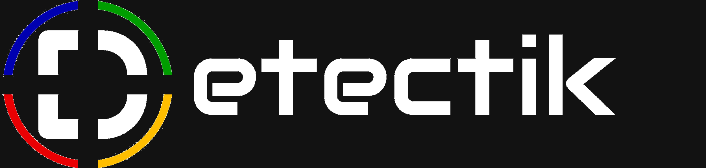

01
Desarrollo web
Sitios institucionales y plataformas web rápidas, responsive y preparadas para evolucionar.
- Diseño UX/UI y desarrollo
- Paneles y automatizaciones
- Mantenimiento y mejoras

Soluciones digitales creadas con criterio técnico, visión de negocio y seguridad desde el diseño. Atención directa, sin capas innecesarias.
Una relación directa.
Desde la primera idea hasta la evolución de tu solución.
Detectik convierte necesidades reales en herramientas digitales útiles: desde aplicaciones y plataformas de gestión hasta sitios institucionales seguros. Un servicio independiente, flexible y cercano, con foco en soluciones mantenibles y crecimiento gradual.
Partimos por entender el problema. Luego diseñamos lo necesario, sin complejidad artificial.
Sitios institucionales y plataformas web rápidas, responsive y preparadas para evolucionar.
Aplicaciones móviles y herramientas digitales enfocadas en resolver tareas concretas.
Plataformas para organizar información, procesos y comunicación en condominios.
Reducción de riesgos, buenas prácticas y una postura de seguridad más sólida.
Uso práctico de inteligencia artificial para ahorrar tiempo y apoyar decisiones.
Apoyo digital para planificación, diseño, administración y control de proyectos.
Guías claras para resolver los problemas TI más comunes. Sin tecnicismos y a tu ritmo.
Elige tu problema para ver instrucciones detalladas o usa el asistente guiado. No necesitas compartir contraseñas, códigos de verificación ni datos bancarios.
Contraseña olvidada, cuenta bloqueada o código que no llega.
Guiarme con el asistente ↗Nunca envíes tu contraseña, códigos de recuperación ni documentos de identidad por chat a quien diga ser soporte.
Wi-Fi conectado sin internet, cortes o páginas que no cargan.
Guiarme con el asistente ↗No restaures el router a valores de fábrica ni cambies configuraciones avanzadas sin conocer los datos de conexión.
Equipo que se pega, aplicaciones que no abren o poco espacio.
Guiarme con el asistente ↗Evita “optimizadores” desconocidos, limpiadores de registro y descargas de sitios no oficiales. No desactives el antivirus para intentar arreglar una aplicación.
Un paso a la vez. Tú decides cuándo avanzar.
El asistente funciona en tu navegador. No envía tus respuestas ni guarda información.
Paquetes orientativos que se ajustan al alcance, la urgencia y la complejidad de cada proyecto.
Para profesionales y organizaciones que necesitan presentarse bien en internet.
Para convertir un proceso manual en una herramienta digital ordenada.
Para sitios existentes que requieren cuidado, prevención y mejoras.
Los servicios de seguridad se realizan únicamente con autorización explícita y alcance acordado. Los planes finales, plazos y valores se definen después de una evaluación inicial.
Una estructura clara para avanzar sin perder el control del proyecto.
Entendemos el contexto, los usuarios y el resultado que necesitas.
Definimos alcance, prioridades, riesgos y una primera versión viable.
Desarrollamos por etapas, con foco en usabilidad, seguridad y mantenimiento.
Medimos, corregimos y sumamos capacidades cuando aportan valor.
La primera conversación sirve para ordenar la idea, identificar prioridades y ver si Detectik es el aliado correcto.